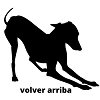

Ellos lo cuentan
En términos generales, podríamos decir que las adopciones no vienen nada mal, si hablamos de cachorros o adultos. Poca gente se está animando a adoptar galgos machos adultos. Por eso, le pedimos a la gente que se animó a adoptar que compartan algunas palabras para que podamos compartirlo en redes y así la gente se entere lo lindo que es tener un galgo adulto en la casa. La pregunta fue: ¿cómo es la experiencia de tener un galgo adulto en casa?
Felipe me cambio la vida. Yo pensaba que al tener un galgo iba a necesitar espacio, que iba a orinar en todos lados, iba a destruir todo por la falta de actividad física. Pero convivimos con él en un departamento y no fue así. Lo conocí ya con más de 1 año me di cuenta que estaba totalmente equivocado. No solo que estaba súper adaptado a un departamento cerrado, sino que era feliz durmiendo, jugando 12 segundos con su Mickey de peluche y seguir durmiendo hasta su paseo. Hoy en día, que vivimos en una casa, se levanta de la cama para pedir salir a orinar y vuelve rápido a acostarse. Pasa su día descansando, jugando un rato explosivo y nada más. Si bien cuando sale al jardín corre y juega, es un momento nada más y luego busca estar tranquilo y que nadie lo moleste. Su rutina es: corre lo más rápido que puede dejando a todos los pipis atrás, frena, se mete a la pile, toma agua y se acuesta. Es muy pegado a su mamá y ni por la mejor comida va a dejar de estar acurrucado junto a ella (y si está tapado, mejor). 
Aquiles apareció agonizando en una cuneta en la zona de Rafaela, pensábamos que no iba a sobrevivir pero fue fuerte y hoy es parte de la familia. ¿Qué puedo decir de él?. Es un viejo mimoso y dormilón. Le brillan los ojos al salir de paseo. Es mi fiel compañero y su corazón está lleno de gratitud. También marca sus límites y deseos, pero lo que más le encanta es robarme la cama
Tener un galgo macho adulto es todo lo que esta bien. Es tener una cama bien calentita y ocupada en todas las estaciones. Es tener un recibimiento cariñoso asegurado. Solo quieren algo cómodo para reposar MIL horas al dia. Eso si, que no falte comida rica y y la hora del paseo es sagrada. Son la paz total. Jamás tendría algo malo para decir de mis perros porque para mí son lo más grande que hay. Tener un perro adulto y encima galgo es una experiencia que se las deseo a todos. Batu (y Flaco, ahora en el arcoiris) nos eligieron a nosotros y nos cambiaron la vida para siempre.
Sinceramente tener un galgo, ya sea adulto o no ,es lo mejor que les puede pasar. Tener un galgo macho es maravilloso, son súper cariñosos, no molestan, viven durmiendo jaja. Lleva sus responsabilidades, como cualquier otro perro, hay que sacarlos a pasear,ellos necesitan gastar energía como todos. Pero, a los que lean este mensaje, no se van a arrepentir de tener un galgo macho. Denle una oportunidad y verán que son un amor, como mi Claus.
Tener un galgo macho no requiere de mucho esfuerzo para cuidarlo ya que al ser adulto entiende muchas cosas si les enseñas de buena manera.. Es constancia y disciplina, todos los días un poco de tiempo dedicarle y darle amor ya que necesitan eso. Mientras les brindes amor y cariño, el perro te va a responder con lo mismo. No es difícil y menos una pérdida de tiempo ya que vale la pena, por que terminas amando como si lo hubieses adoptado desde chiquito, amo mucho a panki y lorenzo perdón pero me pueden jajajaja.
¿Que cómo es la vida con un galgo? ¡Es divertidísima! Es un sin fin de aventuras con un amigo al que no se le termina la pila, es amor, es juegos, son largas siestas al sol abrazados Y varios chapuzones en el rio. Lumus es el galgui de la casa con 3 años, súper dócil, bueno y compañero. Su hobby es dar besos a todo aquel que llegue a casa.
Nunca había adoptado un perro adulto, como la mayoría, buscaba tener uno desde cachorro. Que gran error el mío durante todos estos años. Vi a Humo, que necesitaba una familia, él tiene 6 años aproximadamente, negro, estaba en el refugio. Pregunté por él, y sin darme cuenta, en pocos días, había adoptado un perro grande de tamaño, adulto de 6 años, negrito. Llegó a nuestras vidas para cambiarlo todo. Él nos da mucho amor, aprendió a jugar, es cariñoso, un compañero único. Tenemos una conexión mágica, no tuve que enseñarle nada, es muy educado, salimos a un predio enorme donde corre, jugamos a la cachada, disfruta plenamente del aire libre, de su libertad. Me pregunto muchas veces porque no adopté antes un adulto, ellos al igual que un cachorro merecen amor, cuidados y juegos. Reconforta el alma ver a un ser que ha sufrido, cuando corre por placer, cuando juega. No solo mejoramos su vida, ellos hacen la nuestra más feliz.
La primera noche que lo vi al Gringo bajar del auto, le dije a papá "me dijiste un perro, no un caballo", de todos los galgos que había visto, el Gringo es uno de los mas grandotes y mi casa es de 2mx2m. Teníamos miedo de que no se adaptara por el espacio, yo me imaginaba que era re hiperactivo y corría por todos lados, pero la realidad es que es el perro mas tranquilo de todos, super educadito, cuidadoso para pasar entre las mesas por ej, es un santo. Eso si, salimos al parque a correr y chau jajajaja es flash. Siempre digo que adoptar un adulto es lo mejor que te puede pasar... 1. Porque ya conoces la personalidad 2. Porque ya saben hacer sus necesidades afuera 3. Porque ayudas a que un adulto consiga hogar Adopten adultos, no se van a arrepentir.